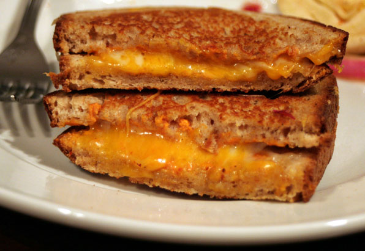

Grilled Cheese Sandwich

Description
The grilled cheese sandwich is the ultimate comfort food - crispy, golden bread filled with perfectly melted cheese. This classic American sandwich has been satisfying people of all ages for generations. While it may seem simple, achieving the perfect balance of crispy exterior and gooey interior requires just the right technique.
The secret to an exceptional grilled cheese lies in using good quality cheese, buttering the outside of the bread properly, and cooking it low and slow to ensure the cheese melts completely before the bread burns. Whether enjoyed on its own or paired with a bowl of tomato soup, this sandwich represents pure comfort in every bite.
Ingredients
- 2 slices of bread (white, sourdough, or your preference)
- 2-3 slices of cheese (cheddar, American, or your favorite melting cheese)
- 2 tablespoons butter, softened
- Salt and pepper to taste (optional)
Steps
- Heat a skillet or griddle over medium-low heat.
- Butter one side of each slice of bread evenly from edge to edge.
- Place one slice of bread butter-side down in the heated skillet.
- Add the cheese slices on top of the bread in the pan, covering the surface evenly.
- Top with the second slice of bread, butter-side up.
- Cook for 3-4 minutes until the bottom is golden brown and crispy.
- Carefully flip the sandwich using a spatula.
- Cook for another 2-3 minutes until the second side is golden brown and the cheese is fully melted.
- Remove from heat and let cool for 1 minute to allow the cheese to set slightly.
- Cut diagonally if desired and serve immediately while hot and crispy.
Home